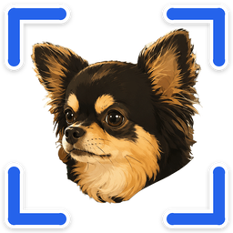
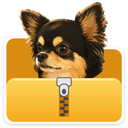

웅캡처woong capture
화면 캡처 · 동영상 녹화
Alt + 2 로 캡처하고 바로 꾸미기,
Alt + 3 으로 화면 녹화(MP4)
광고 없는 무료 윈도우 프로그램이에요. 필요한 것을 눌러 받으세요.
휴대폰에서는 설치할 수 없어요. PC(윈도우 10 · 11)에서 이 페이지를 열어 받아 주세요.

화면 캡처 · 동영상 녹화
Alt + 2 로 캡처하고 바로 꾸미기,
Alt + 3 으로 화면 녹화(MP4)

압축 · 풀기
파일을 오른쪽 클릭해서 바로 압축하고 풀기
zip · 7z · rar · tar · gz 등
파란 창은 인증서(유료 서명)를 사지 않은 작은 무료 프로그램이라 처음 한 번만 보여요. 설치한 뒤에는 다시 뜨지 않아요.